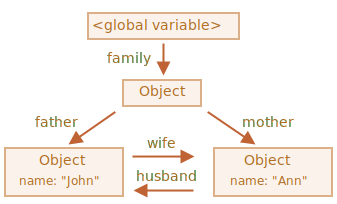
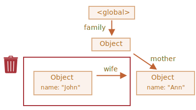
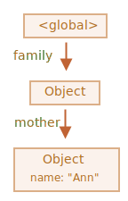

Взаимосвязанные объекты
Теперь более сложный пример. Семья:
function marry(man, woman) {
woman.husband = man;
man.wife = woman;
return {
father: man,
mother: woman
}
}
let family = marry({
name: "John"
}, {
name: "Ann"
});Функция marry «женит» два объекта, давая им ссылки друг на друга, и возвращает новый
объект, содержащий ссылки на два предыдущих.
В результате получаем такую структуру памяти:
На данный момент все объекты достижимы.
Теперь удалим две ссылки:
delete family.father;
delete family.mother.husband;Недостаточно удалить только одну из этих двух ссылок, потому что все объекты останутся достижимыми.
Но если мы удалим обе, то увидим, что у объекта John больше нет входящих ссылок:
Исходящие ссылки не имеют значения. Только входящие ссылки могут сделать объект достижимым. Объект John теперь недостижим и будет удалён из памяти со всеми своими данными, которые также стали недоступны.
После сборки мусора:
